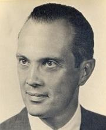

If you played that "game" on the previous page, you just participated in a variation of an old experiment made in 1956 by someone called George Miller.
He discovered that people can store roughly 7 things in short-term memory. The capacity isn't a hard number, but for the most part it's 7 plus or minus 2.
Here's the thing though, in our experiment we used single numbers: Digits. What if we thought bigger, and used words? Or pictures? Or maybe even groups of numbers?
The fascinating thing about Miller's experiment is that while he found the capacity for short-term memory,
he also realized that we don't store individual things, but chunks of things.
But what does this mean for us?
It means we can remember things better if we group them in meaningful ways.